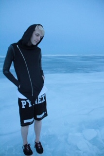

I have always been inspired to create things, even from a very young age. Wether it was picking up an instrument, finger painting, or posing for the camera in funny outfits. This developed into more complex skills with music production and theory, fairly extensive use of digital illustrators, and designing, sewing, and modeling for independent clothing companies. I feel the final skill to bridge a large gap of ability is conmputer programming. With this final skill the possibilities will be endless on what I can achieve.
